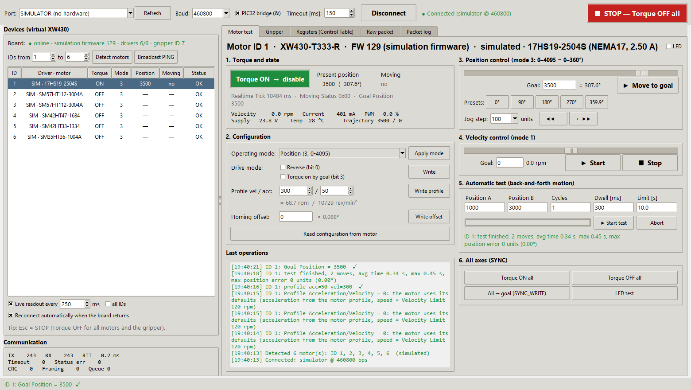
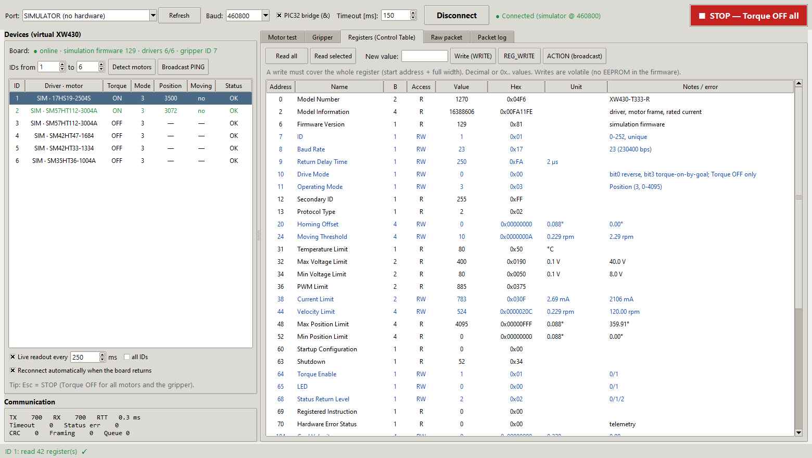
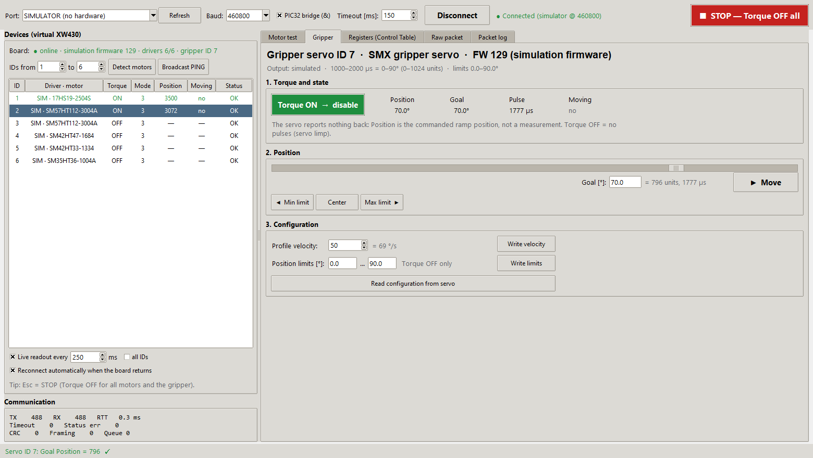
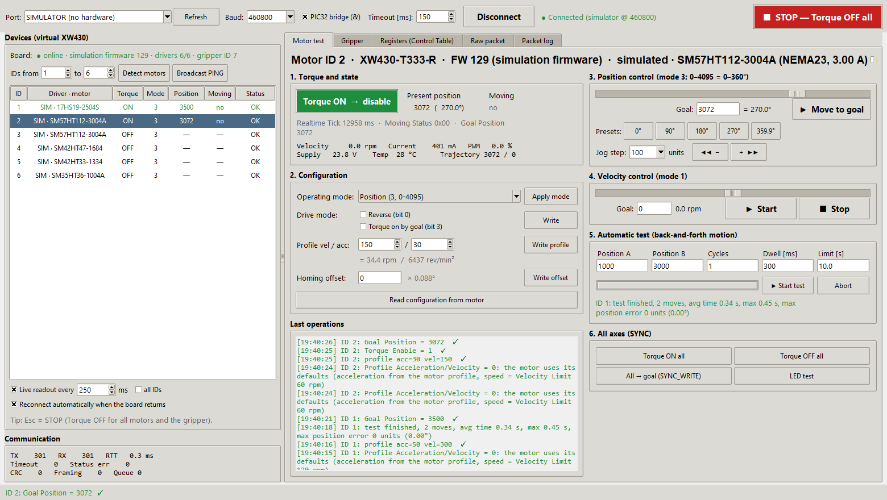

Motor tester GUI¶
tools/dxl_test_gui is a desktop application for testing the firmware and
every stepper axis over DYNAMIXEL Protocol 2.0
(ROBOTIS specification).
It acts as the bus master, the same role the Robot PC has. It runs on Windows
or Linux and needs only Python, Tkinter, and pyserial.

Starting¶
| Way | Command |
|---|---|
| VS Code on Windows | Ctrl+Shift+B → Run motor tester GUI or Run motor tester GUI (simulator) |
| Windows, no VS Code | double-click tools\dxl_test_gui\run_gui.bat (creates .venv on first run) |
| Any OS | .venv Python: python tools/dxl_test_gui/dxl_gui.py [--port COM5] [--sim] [--sim-uncalibrated] |
Set up .venv first; see Development environment.
| Option | Meaning |
|---|---|
--port COM5 |
Preselects a serial port |
--baud 460800 / --baud Auto |
Preselects the PC port bit rate (default 460800, the kit's USB side) |
--no-pic32-bridge |
Does not send & after opening the port (direct USB-UART cable instead of the kit's PIC32 bridge) |
--sim |
Built-in Python simulator that behaves like the simulation firmware (motion and telemetry); no board needed |
--sim-uncalibrated |
Python simulator of the target firmware with an axis whose position scale is 0 (position and telemetry return Access Error) |
With the real board, flash the simulation firmware first. The firmware runs
on the kit, answers over the same UART, and simulates the axes, so you can test
the whole protocol path without motors. The device list then shows
SIM ·
Connecting¶
- Connect the kit's USB Mini-B to the PC. The port shows up as
COMx(Windows) or/dev/ttyACM0(Linux). - Pick the port and keep Baud 460800, the rate between the PC and the
kit's PIC32 (the PIC32 talks to the firmware at 230400). Keep
PIC32 bridge (&) ticked: the PIC32 passes data to the
SmartFusion2 only after it has received
&, which the tool sends after opening the port and after every rate change (see Host link). Auto tries 460800, 230400, 115200, 57600, 1000000, 2000000, and 9600 bps and keeps the first rate at which a device answers a broadcast PING. If you pick another rate while connected, the tool switches the open port and detects the motors again. The connection label shows the rate in use. Timeout is the time the tool waits for each status packet (default 150 ms). - Click Connect. The tool runs Detect motors: it pings IDs 1-6, the controller (ID 200) and the gripper servo (ID 7), and lists the axes with their driver and motor (see below).
Scan (PING) searches any ID range. Broadcast PING asks every device to answer at once.
Motor detection and connection monitoring¶
Detect motors pings the chosen ID range and the controller device (ID 200). It then reads each motor's Model Information. The device list shows:
- Driver · motor for every detected axis, for example
TMC5160 · 23HS2430 (NEMA23, 3.00 A). The driver is detected by the firmware; the motor frame and current are configured in the firmware. The GUI looks them up in the project's motor profiles (apps/SmartManipulator_Controller/include/motor/motor_profiles.h) to show the motor name. If several profiles share frame and current (23HS2430 and SM57HT112-3004A are both NEMA23, 3.0 A), the GUI shows the motor thatmotor_axes.hassigns to that ID. - ⚠ config: … after the motor when the board reports a different motor
than
motor_axes.hin this checkout assigns to that ID, for example after flashing a firmware built from another configuration. The log then says Motor configuration differs from this project; rebuild and flash, or update the checkout. - — not detected / absent for axes whose driver did not answer, for example a missing module or no 24 V motor supply.
- Board line:
online · <variant> firmware <version> · drivers n/6 · gripper ID 7. Green means all drivers were found, orange means some are missing. The gripper part is missing when the firmware has no servo.
This uses only standard DYNAMIXEL Protocol 2.0 transactions (PING and READ).
Connection monitoring runs continuously:
| Situation | What the GUI shows | What it does |
|---|---|---|
| USB cable or board unplugged (port disappears or I/O fails) | ● Connection lost; rows marked port lost; controls disabled | Closes the port. With Reconnect automatically checked, it reopens the port when it reappears and detects the motors again. |
| Port still open, but the board stops answering (power off, reset, firmware hang) | ● Port open, board not responding, after 3 cycles without an answer | Keeps checking every second. When the board answers again, it re-detects the motors. |
| One axis stops answering while the board is alive | Row status driver lost | The rest keeps working; click Detect motors to update. |
When live readout is off, a one-second heartbeat (PING of the controller) keeps the monitoring running.
Window layout¶
| Area | Function |
|---|---|
| Top bar | Port, baud rate, PIC32 bridge (&), timeout, Connect/Disconnect, connection state, and the red STOP — Torque OFF all button (key Esc; also switches the gripper servo off) |
| Device list | Board line, then one row per axis: ID, Driver · motor (SIM · … on the simulation firmware), torque, mode, present position, moving, status. With Live readout on, the selected motor (or all, with all IDs) is polled every N ms. Reconnect automatically reopens a lost port. |
| Communication | TX/RX counters, last round-trip time, timeouts, status errors, CRC and framing errors, worker queue |
| Motor test tab | Step-by-step test of the selected axis (below) |
| Gripper tab | Gripper servo (ID 7): torque, goal in degrees within the position limits, Min/Center/Max presets, Profile Velocity (ramp), position limits; live position, goal, pulse width (µs) and Moving while the tab is open (see Testing the gripper servo) |
| Registers tab | Control Table browser: Read all, Read selected, WRITE, REG_WRITE, ACTION |
| Raw packet tab | Any instruction with hex parameters; stuffing and CRC are added for you |
| Packet log tab | Every TX/RX packet with timestamp, decoding, and hex dump; Save to file… |
Testing one stepper axis¶
Before you drive a motor, check that the device list shows the right motor for the axis (no ⚠ config warning) and follow the bring-up checklist. Detect motors works without motor current: it only needs VM on the module (the TMC5160 logic is powered from VM).
- Select the motor in the device list. The tool reads its configuration.
- Section 2, Configuration:
- Operating mode: Position (3), Extended position (4), or Velocity (1). Click Apply mode. The mode can change only with torque off; the tool offers to switch torque off first.
- Drive mode: Reverse (bit 0) inverts the direction. Torque on by goal (bit 3) enables torque automatically on a new goal.
- Profile vel / acc, for example 100 / 20, then Write profile. 0 means the motor defaults: speed = Velocity Limit (address 44), acceleration from the motor profile. Profile velocity above the Velocity Limit returns Data Range Error.
- Homing offset shifts the zero (units of 0.088°).
- Section 1, Torque: click the button to switch torque ON (green) or OFF. Below the present position, the telemetry line shows velocity (rpm), current (mA), PWM (%), supply voltage, temperature, and the position and velocity trajectory. On the target firmware the current is the TMC5160 current setting in use, voltage and temperature are nominal values, and PWM is 0.
- Section 3, Position control: use the slider (0–4095 = 0–360° in mode 3, ±4 turns in mode 4) or type a goal, then Move to goal. You can also use the 0°/90°/180°/270° presets or jog with − / + by the chosen step.
- Section 4, Velocity control (mode 1): set a speed within ± the axis' Velocity Limit (× 0.229 rpm; the slider follows it), then Start / Stop.
- Section 5, Automatic test: enter positions A and B, cycles, dwell, and a time limit, then Start test. The tool enables torque, moves A↔B, waits for Moving = 0, and reports each move's time and the final position error. Abort stops after the current step.
- Section 6, All axes: Torque ON/OFF for all, all axes to the current goal with SYNC_WRITE (the firmware runs them one after another), and an LED test.
Every action is listed under Last operations: green for success, red for an error, with a hint. For example, Access Error on position means the axis has no position scale or the operating mode is wrong.

Testing the gripper servo¶
The gripper servo (MG996R on CorePWM) is a separate virtual DYNAMIXEL device, ID 7 by default. It has its own Gripper tab, not a row in the device list.

Detection. Detect motors asks the controller (ID 200) for the servo ID
(controller register 5) and then pings that ID. The Board line then ends
with gripper ID 7. If register 5 is 0, the firmware was built without
CONFIG_SMX_SERVO, and the tab shows Gripper servo: not detected with all
controls disabled. Without a controller answer, the tool tries the default
ID 7.
Header. The title shows the ID, the model (SMX gripper servo, model number
0x5356) and the firmware variant. The line below shows the output (CorePWM
on the target firmware, simulated on the simulation firmware), the pulse
range and travel, for example 1000–2000 µs = 0–90° (0–1024 units), and the
position limits in use.
| Section | Controls | Registers |
|---|---|---|
| 1. Torque and state | Torque OFF → enable / Torque ON → disable. Torque ON starts the 50 Hz pulses, Torque OFF stops them (the servo goes limp). Live values: Position, Goal, Pulse (µs, off with torque off) and Moving. | Torque Enable (64), Goal Position (116), Present Position (132), Moving (122) |
| 2. Position | Slider and Goal [°] (Enter = Move), with the matching units and pulse width next to it. Move writes the goal. Min limit, Center and Max limit move to the position limits or their middle. | Goal Position (116) |
| 3. Configuration | Profile velocity (0 = no ramp, the servo moves at its own full speed; each unit is 0.229 rpm, so 50 ≈ 69 °/s) and Write velocity. Position limits [°] and Write limits (Torque OFF only). Read configuration from servo loads velocity, limits, goal and torque into the tab. | Profile Velocity (112), Max/Min Position Limit (48/52) |
The units are the axis units, 0.088° each (4096 = 360°); the servo travel 0–90° is 0–1024.
Steps:
- Open the Gripper tab. Detect motors has already read the servo configuration into it. While the tab is open, the live readout polls the servo instead of the selected axis.
- Set Profile velocity, for example 50, and click Write velocity.
- Click Torque OFF → enable. The first time after power-up the servo moves to the start position (45°) at full speed, because its real position is not known.
- Enter a goal in degrees, drag the slider, or use Min limit, Center, Max limit, then click Move. The firmware ramps the pulse in 20 ms steps; Moving shows YES until the ramp ends.
- Restrict the travel to what the gripper can do: switch torque off, enter the limits in section 3 and click Write limits. The slider then covers only the new range.
Rules and messages:
- A goal outside the position limits is refused in the GUI with a hint; the firmware would answer Data Range Error.
- A goal written with torque off is only stored (the log says so); the servo moves to it when torque is switched on.
- Position limits written with torque on return Access Error.
- STOP (Esc) also switches the servo torque off; on closing, the tool offers to switch torque off on all motors and the gripper.
- Position is the commanded ramp position, not a measurement: the MG996R has no feedback. Check the real position by eye.
Messages you will see with the current firmware¶
| Message | Cause |
|---|---|
| Present position unavailable / Access Error on Goal Position | The axis has no position scale (only in --sim-uncalibrated or a firmware built without motor profiles) |
| Access Error on Drive Mode, Homing Offset, Current Limit, Velocity Limit | Torque is ON; these registers are written with Torque OFF only |
| Hardware Error Status bit 0 and Torque OFF by itself | The TMC5160 lost VM and restarted; the firmware configured it again. Position restarted at 0: switch Torque ON again |
| Access Error on Goal Velocity write in mode 3 | Wrong mode; Goal Velocity is written only in mode 1 |
| Access Error on Operating Mode | Torque is ON |
| Data Length Error | The write did not start at a register address or did not match its width |
| Values in the wrong fields, one step behind (only with an old GUI) | The PIC32 held back a final % byte, see Host link; current DxlBus adds a 0x00 after such packets |
| Timeout on every ID | Wrong port or baud rate (kit USB port: 460800; try Auto), PIC32 bridge (&) unticked, no power, firmware not running, or a text console active on the UART |
| Baud Rate register shows 23, not 460800 | Correct: the register reports the firmware UART (PIC32 ↔ SmartFusion2, 230400 bps; project code 23, 46 would be 460800). The PC port runs at 460800 |
Automated check¶
firmware_check.py runs the same protocol transactions automatically and
prints PASS/FAIL. On the simulation firmware it runs 49 checks, including
motion, telemetry and the gripper servo. On the target firmware it runs the protocol checks only;
motion runs only with --allow-motion.
.\.venv\Scripts\python.exe tools\dxl_test_gui\firmware_check.py --port COM5
.\.venv\Scripts\python.exe tools\dxl_test_gui\firmware_check.py --sim # Python simulator

Internals¶
| File | Role |
|---|---|
dxl_gui.py |
Tkinter user interface. A single worker thread runs all bus transactions; the user interface never blocks. |
dxl/protocol.py |
Protocol 2.0 codec: CRC-16, byte stuffing, stream parser, packet descriptions |
dxl/bus.py |
Thread-safe master: PING, broadcast PING, READ, WRITE, REG_WRITE, ACTION, SYNC_READ, SYNC_WRITE; statistics and packet log callback |
dxl/control_table.py |
XW430 register subset, servo and controller registers, units, operating modes |
dxl/motors.py |
Reads motor_profiles.h and motor_axes.h, names the motors and detects a configuration mismatch |
dxl/sim.py |
Simulator with the same instructions, register rules, and error codes as dynamixel_x430.c and dynamixel_servo.c (both variants) |
tmc_diag.py |
TMC5160 bring-up diagnostics through the raw register window (IOIN/SD_MODE, CHOPCONF, DRV_STATUS, MSCNT), optionally during a move |
firmware_check.py |
Automated conformance check against a port or the Python simulator |
tests/test_protocol.py |
Unit tests, including the firmware codec cross-check |
When the firmware's instructions, register rules, or error codes change,
update dxl/sim.py and dxl/control_table.py to match, then run the tests.